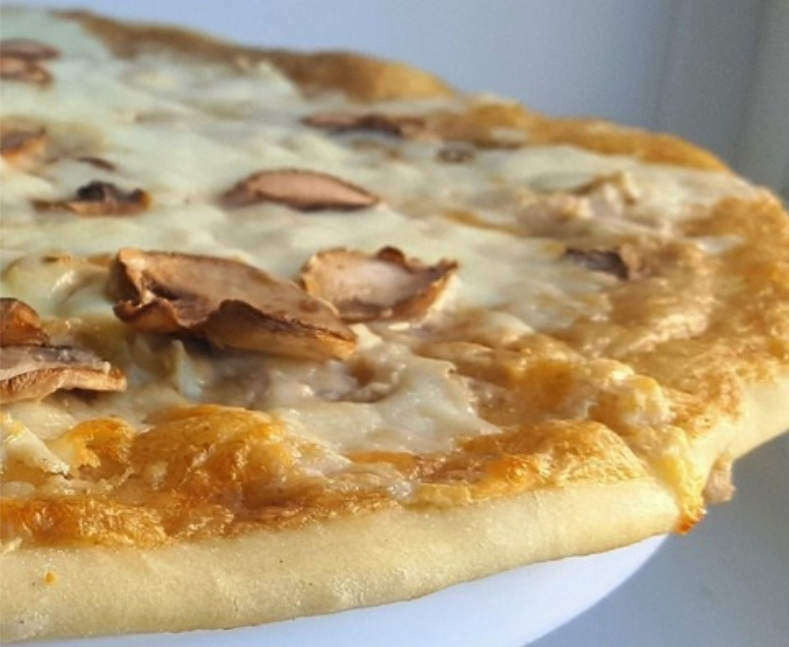

 Тесто:
- Мука пшеничная / Мука — 250 г
- Вода (Теплая) — 125 г
- Желатин 1шт.
- Соль — 1/3 ч. л.
- Сахар — 1 ч. л.
- Дрожжи (С горкой. Сухие бысродействующие) — 1 ч. л.
Начинка:
- Шампиньоны (Для украшения) — 50 г
- Сыр мягкий — 200 г
- Специи — По вкусу ч. л.
Соус:
- Шампиньоны — 150 г
- Сливки (20 %) — 200 г
- Лук репчатый — 1 шт
- Специи (Соль, перец) — По вкусу ч. л.
- Масло сливочное (Для жарки) — 50 г
- Сыр мягкий — 1 ст. л.
Рецепт:
- Готовим дрожжевое тесто. Теплую воду смешиваем с сахаром. В отдельной чаше смешиваем сухие ингредиенты:муку, соль и дрожжи. Соединяем в шар. Добавляем раст. масло и вымешиваем еще минут 10.
- Тесто накрываем пленкой и ставим в теплое место подходить.
- Нарезаем лук, грибы и трем сыр. Нарезаем как угодно, так как потом будем пробивать блендером. Часть грибов режем для украшения пластинами.
- Сливочное масло топим на сковороде и обжариваем лук до золотистого цвета. Добавляем грибы и ждем пока они подрумянятся.
- Наливаем сливки. Солим, перчим. Тушим 15-20минут. В конце добавляем сыр.
- Пробиваем блендером.
- Собираем пиццу. Тесто делим на две части и раскатываем толщиной 2 мм. Сверху смазываем соусом, посыпаем специями, выкладываем сыр и кусочки грибов.
- Выпекаем на пергаменте. Можно посыпать манкой, чтобы пицца легче отходила. 250 градусов, примерно 5-7 минут.